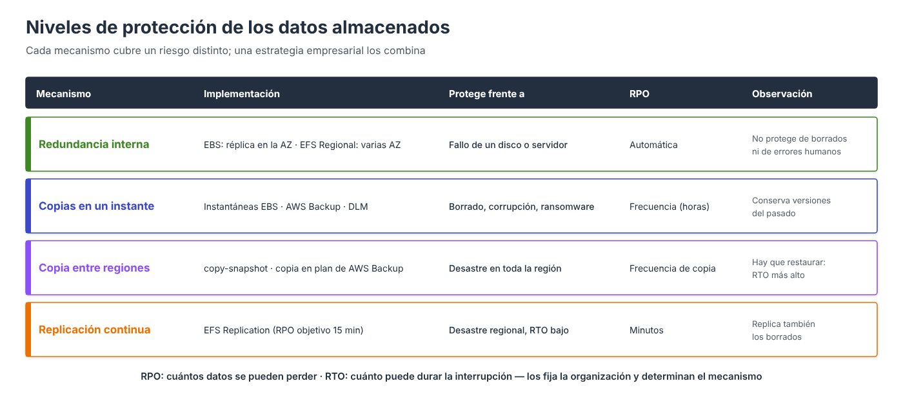

Copias de seguridad y recuperación¶

El criterio de evaluación pide configurar copias y replicación de forma que se pueda recuperar en la forma y el tiempo especificados. Hay que partir de dos requisitos medibles y elegir el mecanismo que los cumple.
| Requisito | Pregunta | Determina |
|---|---|---|
| RPO (Recovery Point Objective) | ¿Cuántos datos, medidos en tiempo, se pueden perder? | La frecuencia de las copias |
| RTO (Recovery Time Objective) | ¿Cuánto tiempo puede estar el servicio parado? | El mecanismo de recuperación |
Mecanismos¶
| Mecanismo | Servicio | RPO típico | Protege frente a |
|---|---|---|---|
| Instantánea manual | EBS | El de la última copia | Error en un cambio planificado |
| Data Lifecycle Manager (DLM) | EBS | Horas | Borrados, corrupción |
| AWS Backup | EBS, EFS y otros | Horas | Borrados, corrupción |
| Copia a otra región | EBS (instantáneas), EFS (AWS Backup) | Horas | Desastre en toda la región |
| EFS Replication | EFS | Minutos | Desastre regional, con RTO bajo |
Las copias conservan versiones del pasado y recuperan lo borrado. La replicación mantiene una réplica actual: recupera rápido tras un desastre, pero también replica los borrados. Por eso se combinan.
Amazon Data Lifecycle Manager (DLM)¶
DLM automatiza las instantáneas de EBS. Una política de ciclo de vida selecciona los volúmenes por etiqueta y define cada cuánto se crean instantáneas y cuántas se conservan. Las más antiguas se borran solas.
- Etiquetar el volumen que se quiere proteger, por ejemplo
backup = diario. - EC2 → Elastic Block Store → Administrador del ciclo de vida → Crear política de ciclo de vida.
- Política de instantáneas de EBS → Siguiente.
- Tipos de recursos de destino: Volumen. Etiquetas de recursos de destino:
backup = diario. - Descripción, rol de IAM (en el Learner Lab, Elegir otro rol →
LabRole) y estado: Habilitada. Siguiente. - Programación: frecuencia Diaria, Cada 12 horas, A partir de
03:00UTC; retención por recuento:14. - Revisar política → Crear política.
El paso a paso completo se hace en la práctica 1.
aws dlm create-lifecycle-policy \
--description "Cada 12 h, volumenes con backup=diario" \
--state ENABLED \
--execution-role-arn arn:aws:iam::111122223333:role/LabRole \
--policy-details '{
"PolicyType": "EBS_SNAPSHOT_MANAGEMENT",
"ResourceTypes": ["VOLUME"],
"TargetTags": [{"Key": "backup", "Value": "diario"}],
"Schedules": [{
"Name": "Cada12Horas",
"CopyTags": true,
"CreateRule": {"Interval": 12, "IntervalUnit": "HOURS", "Times": ["03:00"]},
"RetainRule": {"Count": 14}
}]
}'
Con esta política, el RPO es de 12 horas y se pueden recuperar estados de los últimos 7 días. La primera instantánea se crea dentro de la hora siguiente a la hora de inicio.
AWS Backup¶
AWS Backup centraliza las copias de EBS, EFS, RDS, DynamoDB y otros servicios. Un plan de copia define la frecuencia, la retención y, si se desea, la copia a otra región, y se asigna a los recursos por etiqueta. Las copias se guardan en un almacén (backup vault) y cada una es un punto de recuperación desde el que se restaura.
En EFS, el asistente de creación activa por defecto un plan diario con 35 días de retención. Su uso y la restauración se ven en Copias de seguridad y replicación de EFS.
Comprobar la recuperación¶
Una copia que nunca se ha restaurado no es una copia fiable:
- Restaurar periódicamente y comprobar que los datos están completos: crear un volumen desde una instantánea, montarlo y revisar los ficheros, como en la práctica 1.
- Medir el tiempo de restauración y compararlo con el RTO.
- Comprobar la antigüedad de la última copia frente al RPO.
Para saber más¶
Contenido opcional que amplía este apartado. No es necesario para las prácticas: despliega cada bloque si te interesa.
Otros requisitos: retención, ubicación y forma
Además del RPO y el RTO, una política de copias suele fijar:
| Requisito | Pregunta | Ejemplo |
|---|---|---|
| Retención | ¿Durante cuánto tiempo hay que conservar las copias? | 7 diarias, 4 semanales, 12 mensuales; 5 años por normativa |
| Ubicación | ¿Dónde deben guardarse? | En otra región de la UE, en otra cuenta |
| Forma | ¿Qué hay que poder recuperar? | El volumen completo, un fichero suelto, el servidor entero |
DLM como infraestructura como código, con copia entre regiones
Como infraestructura como código:
PoliticaInstantaneas:
Type: AWS::DLM::LifecyclePolicy
Properties:
Description: Instantaneas cada 12 h de los volumenes con backup=diario
State: ENABLED
ExecutionRoleArn: !Sub arn:aws:iam::${AWS::AccountId}:role/LabRole # en una cuenta real, AWSDataLifecycleManagerDefaultRole
PolicyDetails:
PolicyType: EBS_SNAPSHOT_MANAGEMENT
ResourceTypes: [VOLUME]
TargetTags:
- { Key: backup, Value: diario }
Schedules:
- Name: Cada12Horas
CopyTags: true
TagsToAdd:
- { Key: creado-por, Value: dlm }
CreateRule:
Interval: 12
IntervalUnit: HOURS
Times: ["03:00"]
RetainRule:
Count: 14
CrossRegionCopyRules:
- Target: us-west-2
Encrypted: true
RetainRule:
Interval: 30
IntervalUnit: DAYS
Con esta política, el RPO frente a un error es de 12 horas como máximo, y se pueden recuperar estados de los últimos 7 días.
Planes de AWS Backup paso a paso
AWS Backup centraliza las copias de varios servicios con un único modelo:
| Concepto | Descripción |
|---|---|
| Almacén (backup vault) | Contenedor cifrado donde se guardan los puntos de recuperación |
| Plan de copia (backup plan) | Una o varias reglas: frecuencia, ventana, ciclo de vida, retención y copias |
| Asignación de recursos | Qué recursos protege el plan: por ARN o, mejor, por etiquetas |
| Punto de recuperación | Cada copia realizada, desde la que se restaura |
| Vault Lock | Hace las copias inmutables: nadie puede borrarlas ni acortar su retención |
| Restore testing | Restauraciones de prueba programadas para validar que las copias sirven |
Ejemplo de plan que cubre EBS y EFS etiquetados con backup=diario: copia diaria con retención de 35 días, copia mensual con retención de un año pasando a almacenamiento en frío, y copia de las diarias a otra región.
{
"BackupPlanName": "plan-almacenamiento-ud3",
"Rules": [
{
"RuleName": "Diaria",
"TargetBackupVaultName": "almacen-produccion",
"ScheduleExpression": "cron(0 3 * * ? *)",
"StartWindowMinutes": 60,
"CompletionWindowMinutes": 480,
"Lifecycle": { "DeleteAfterDays": 35 },
"CopyActions": [
{
"DestinationBackupVaultArn": "arn:aws:backup:us-west-2:111122223333:backup-vault:almacen-dr",
"Lifecycle": { "DeleteAfterDays": 35 }
}
]
},
{
"RuleName": "Mensual",
"TargetBackupVaultName": "almacen-produccion",
"ScheduleExpression": "cron(0 4 1 * ? *)",
"Lifecycle": { "MoveToColdStorageAfterDays": 30, "DeleteAfterDays": 365 }
}
]
}
Almacén
- AWS Backup → Almacenes → Crear almacén: nombre
almacen-producciony clave de cifrado. Crear almacén.
Plan de copia
- AWS Backup → Planes de copia de seguridad → Crear plan de copia de seguridad → Crear un plan nuevo. Nombre:
plan-almacenamiento-ud3. - Regla «Diaria»: almacén
almacen-produccion; frecuencia Diaria a las 03:00 UTC; ventana de inicio 1 hora y de finalización 8 horas; retención 35 días; en Copiar a destino, la regiónus-west-2y el almacénalmacen-drcon retención de 35 días. - Agregar regla «Mensual»: frecuencia Mensual, día 1; Ciclo de vida: pasar a almacenamiento en frío a los 30 días y eliminar a los 365.
- Crear plan.
Asignación de recursos
- En el plan, Asignar recursos: nombre
recursos-etiquetados; rol predeterminado oLabRole. - Definir la selección de recursos: Incluir tipos de recursos específicos (EBS y EFS) y, en Refinar la selección mediante etiquetas,
backup = diario. - Asignar recursos.
Copia bajo demanda (por ejemplo, antes de un cambio): AWS Backup → Recursos protegidos → Crear copia de seguridad bajo demanda, elegir el tipo de recurso, el ID, el almacén y la retención.
aws backup create-backup-vault --backup-vault-name almacen-produccion
PLAN=$(aws backup create-backup-plan --backup-plan file://plan.json --query BackupPlanId --output text)
aws backup create-backup-selection --backup-plan-id "$PLAN" --backup-selection '{
"SelectionName": "recursos-etiquetados",
"IamRoleArn": "arn:aws:iam::111122223333:role/LabRole",
"ListOfTags": [{"ConditionType":"STRINGEQUALS","ConditionKey":"backup","ConditionValue":"diario"}]
}'
# Copia bajo demanda (por ejemplo, antes de un cambio)
aws backup start-backup-job --backup-vault-name almacen-produccion \
--resource-arn arn:aws:elasticfilesystem:us-east-1:111122223333:file-system/fs-0abc123 \
--iam-role-arn arn:aws:iam::111122223333:role/LabRole
DLM o AWS Backup
Para EBS ambos sirven. DLM es específico de EBS, sencillo y sin coste adicional más allá de las instantáneas. AWS Backup es preferible cuando se quiere una única política para todos los servicios (EBS, EFS, RDS…), copias inmutables, informes de cumplimiento o copias entre cuentas. No conviene usar ambos sobre los mismos volúmenes, porque se duplican las instantáneas.
Learner Lab
En el Learner Lab algunas operaciones de DLM y AWS Backup pueden estar limitadas por los permisos del laboratorio. En ese caso se usa LabRole como rol de ejecución o se realizan las copias bajo demanda.
Procedimientos de recuperación
EBS: recuperar un volumen de datos
- Localizar la instantánea adecuada (fecha anterior al incidente).
- Crear un volumen nuevo desde ella en la AZ de la instancia.
- Adjuntarlo a la instancia con otro nombre de dispositivo.
- Montarlo en otro directorio (por ejemplo,
/restaurado), si se quiere en solo lectura, para copiar solo lo necesario; o sustituir el volumen dañado por el restaurado.
- EC2 → Instantáneas, filtrar por ID de volumen y ordenar por Iniciado para localizar la instantánea anterior al incidente.
- Acciones → Crear volumen a partir de una instantánea, en la AZ de la instancia (
us-east-1a), tipogp3. - Volúmenes → seleccionar el volumen nuevo → Acciones → Asociar volumen a la instancia, con el dispositivo
/dev/sdg.
aws ec2 describe-snapshots --owner-ids self \
--filters Name=volume-id,Values=vol-0abc... \
--query "sort_by(Snapshots,&StartTime)[].[SnapshotId,StartTime,Description]" --output table
aws ec2 create-volume --snapshot-id snap-0abc... --availability-zone us-east-1a --volume-type gp3
aws ec2 attach-volume --volume-id vol-0rest... --instance-id i-0123... --device /dev/sdg
En la instancia (en xfs, nouuid evita el conflicto con el UUID del volumen original montado):
EBS: recuperar en otra región
Se copia (o ya estaba copiada por DLM/AWS Backup) la instantánea a la región de destino, se crea el volumen allí y se adjunta a una instancia de esa región, que puede lanzarse desde una AMI también copiada.
EFS: recuperar ficheros borrados
Con AWS Backup se lanza una restauración parcial de las rutas afectadas sobre el mismo sistema de archivos: aparecen en /aws-backup-restore_<fecha>/, desde donde se copian a su ubicación.
EFS: desastre regional
Con EFS Replication, se elimina la configuración de replicación y se montan los clientes de la región secundaria sobre el sistema de destino, que pasa a lectura/escritura (ver el apartado de copias y replicación de EFS).
Ejemplos: qué solución cumple cada requisito
Para cada requisito de la organización se elige el mecanismo que lo cumple:
| Requisito de ejemplo | Solución que lo cumple |
|---|---|
| Volumen de datos web, RPO 24 h, RTO 4 h, 30 días de historial | DLM o AWS Backup diario, retención 30 |
| Contenidos EFS, RPO 1 h ante errores, recuperación de ficheros sueltos | AWS Backup cada hora, restauración parcial |
| Contenidos EFS, sobrevivir a la caída de la región con RTO 30 min | EFS Replication a otra región + AWS Backup (los borrados se replican) |
| Conservar 5 años un volumen de facturación por normativa | Instantánea mensual en nivel archive, o AWS Backup con almacenamiento en frío y Vault Lock |
Funcionalidades avanzadas de las instantáneas
| Funcionalidad | Para qué sirve | Consideraciones |
|---|---|---|
| Nivel de archivo (EBS Snapshots Archive) | Guardar instantáneas que se conservan mucho tiempo y casi nunca se restauran (normativa, cierres anuales) | Almacenamiento hasta un 75 % más barato; permanencia mínima de 90 días; restaurar tarda entre 24 y 72 horas y tiene coste |
| Papelera de reciclaje (Recycle Bin) | Recuperar instantáneas y AMI borradas por error | Se definen reglas de retención (por ejemplo, conservar 7 días lo borrado) |
| Bloqueo de instantáneas (Snapshot Lock) | Impedir que nadie, ni siquiera un administrador, borre una instantánea durante un periodo | Modo governance (los usuarios con permiso pueden desbloquear) o compliance (inmutable); protege frente a ransomware |
| Restauración rápida (Fast Snapshot Restore) | Que los volúmenes creados desde una instantánea ofrezcan todo su rendimiento desde el primer momento | Se activa por instantánea y AZ y tiene coste por hora |
| Compartir instantáneas | Usar una instantánea en otra cuenta de AWS | Las cifradas con la clave administrada por AWS no se pueden compartir; hace falta una clave del cliente |
| Bloqueo del acceso público | Impedir a nivel de región que las instantáneas se compartan públicamente | Muy recomendable: una instantánea pública expone todo el disco |
Inicialización de volúmenes restaurados
Un volumen creado desde una instantánea está disponible de inmediato, pero sus bloques se descargan del almacenamiento de instantáneas la primera vez que se leen. Ese primer acceso tiene más latencia. Si se necesita el rendimiento completo desde el principio (por ejemplo, al restaurar una base de datos de producción), se activa Fast Snapshot Restore o se leen previamente todos los bloques con herramientas como fio o dd.
EFS: conmutación por error (failover) y vuelta (failback)
- Incidencia en la región de origen.
- Se elimina la configuración de replicación. El sistema de destino deja de ser de solo lectura y admite escritura: se convierte en el nuevo sistema principal.
- Las aplicaciones de la región secundaria lo montan y continúan el servicio.
- Resuelta la incidencia, se configura la replicación en sentido inverso, desde el nuevo principal hacia el sistema original (desactivando su protección contra sobrescritura), para sincronizar los cambios de vuelta.
- Se repite la conmutación hacia la región original y se restablece la replicación inicial.
Failover
- En la pestaña Replicación del sistema de origen (o del de destino), pulsar Eliminar replicación y confirmar.
- El sistema de destino pasa de Solo lectura a Grabable.
Failback
- En el sistema original (
eu-west-1): General → Editar y desactivar la Protección contra la sobrescritura de la replicación. Guardar cambios. - En el nuevo principal (
eu-south-2): pestaña Replicación → Crear replicación, con destino Sistema de archivos existentefs-0abc123eneu-west-1. - Cuando esté sincronizado, repetir la conmutación hacia la región original.
# Failover: detener la replicación (el destino pasa a lectura/escritura)
aws efs delete-replication-configuration --source-file-system-id fs-0abc123
# Failback: permitir que el sistema original reciba la réplica inversa
aws efs update-file-system-protection --file-system-id fs-0abc123 \
--replication-overwrite-protection DISABLED
aws efs create-replication-configuration --region eu-south-2 \
--source-file-system-id fs-0def456 \
--destinations Region=eu-west-1,FileSystemId=fs-0abc123
Referencias¶
- AWS. Amazon Data Lifecycle Manager — DLM
- AWS. Create a custom snapshot policy — Política de instantáneas
- AWS. What is AWS Backup? — Guía de AWS Backup
- AWS CloudFormation. AWS::DLM::LifecyclePolicy — Referencia
- AWS. Backup plans — Planes de copia
- AWS. AWS Backup Vault Lock — Copias inmutables
- AWS. Restore testing — Pruebas de restauración
- AWS Whitepaper. Disaster Recovery of Workloads on AWS — Recuperación ante desastres